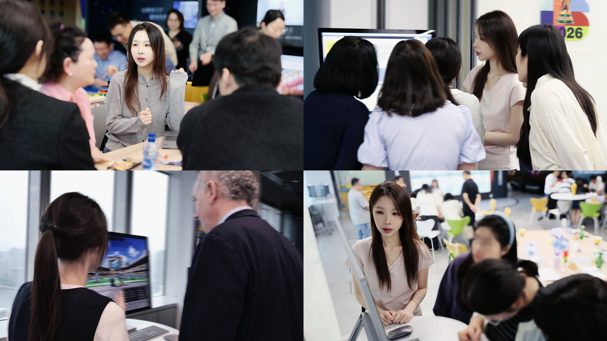
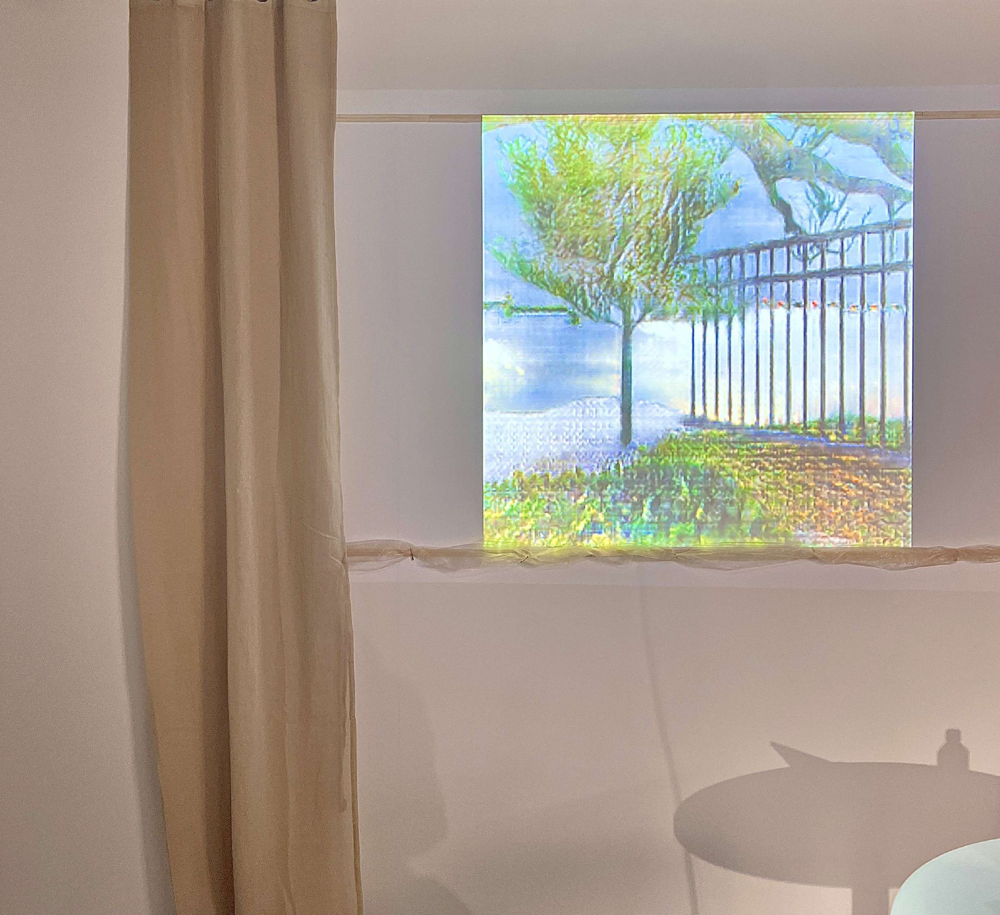
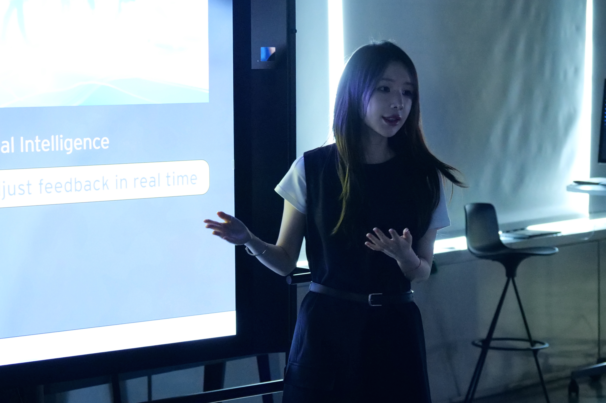

i want to explore ALL
Selected Works
Exploration across experience design, creative technology, and innovation strategy.
Professional Cases

Strategic Workshop Frameworks
2024–2026Designing high-stakes strategic alignment experiences for global leaders.

Visual Odyssey System
2024–2026Transforming strategic workshop closings into dynamic visual hero journeys.

Cross-Cultural Executive Facilitation
2024–2026Steering C-suite consensus across global cultures and complex domains.
Creative Technologist
Web-based Interactive Avatar Creator
2026Transforming event onboarding into an engaging, collective digital twin experience.

Window of the Mind
2023Translating physiological signals into your inner-garden landscape through Physical Computing and Generative Art.

Next-Gen Warroom VR Experience
2025Immersive spatial collaboration for high-stakes medical operations.
Innovation Strategist & Researcher

4D AI Worldcafe: Spatial Intelligence
2024–2026Unlocking Human-AI co-creation from text to 4D spatial intelligence.
Project Title
Project Hook / Main value statement
Curriculum Vitae
Designing human-centred experiences where AI, emerging technologies, and strategic innovation meet.
Strategic Experience Designer with an interdisciplinary background in architecture, computing, and innovation consulting. Experienced in designing AI-powered experiences, strategic workshops, and interactive solutions that connect emerging technologies with human needs and business transformation.
Combining design thinking, spatial intelligence, generative AI, and storytelling, I translate complex challenges into immersive experiences, digital prototypes, and future-oriented strategies. With experience at EY wavespace and an MSc background in digital experience design, I specialise in exploring how AI and emerging technologies can reshape the way people interact, collaborate, and experience digital environments.
- Designed and facilitated 50+ innovation workshops for enterprise clients, applying design thinking, co-creation methods, and strategic design approaches to explore digital transformation and AI opportunities.
- Developed AI-powered experiences and interactive prototypes by integrating generative AI, spatial computing, and emerging technologies into client-facing innovation scenarios.
- Translated complex business challenges into human-centred experiences through UX design, interaction design, prototyping, and strategic storytelling.
- Designed immersive storytelling frameworks and visual communication systems to transform strategic insights into engaging experiences for executive audiences.
- Researched and experimented with emerging AI technologies, including generative models and open-source creative workflows, exploring their potential applications in business and experience design.
- Collaborated with multidisciplinary teams and clients across real estate, F&B, biotechnology, technology, and fashion industries to deliver innovation strategies and proof-of-concept solutions.
- Conducted user research, requirement analysis, and competitive research to identify user needs and improve digital product experiences.
- Designed user flows, interaction prototypes, and functional specifications through collaboration with product managers, developers, and testing teams.
- Supported product iteration through usability analysis, design refinement, and cross-functional communication.
Get in Touch
Open for jobs, innovative projects, and any collaboration opportunities.
Whether you have an exciting role, a fresh idea, or just want to chat about design and tech—my inbox is always open!